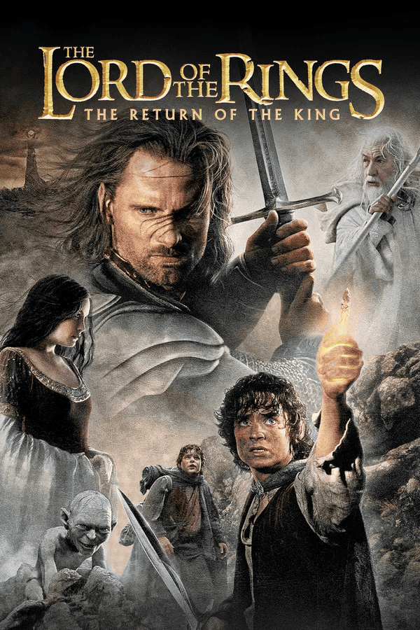
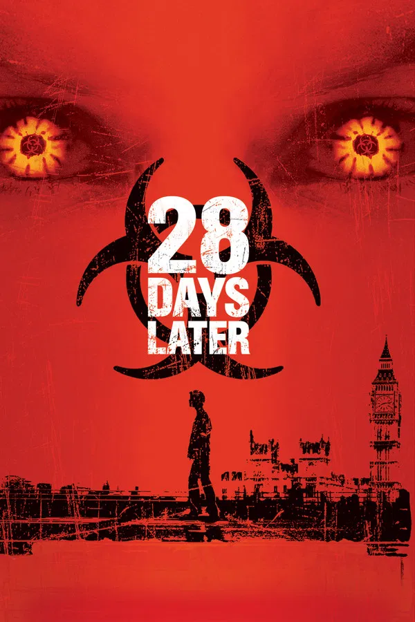
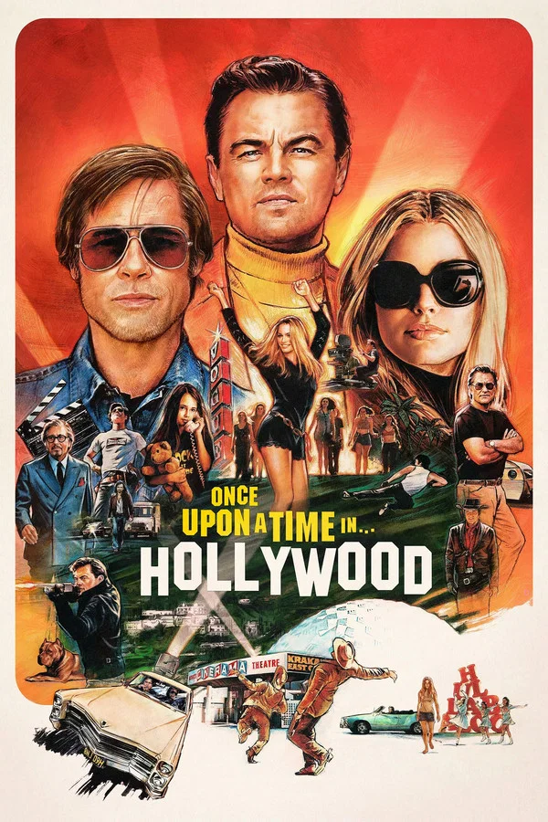
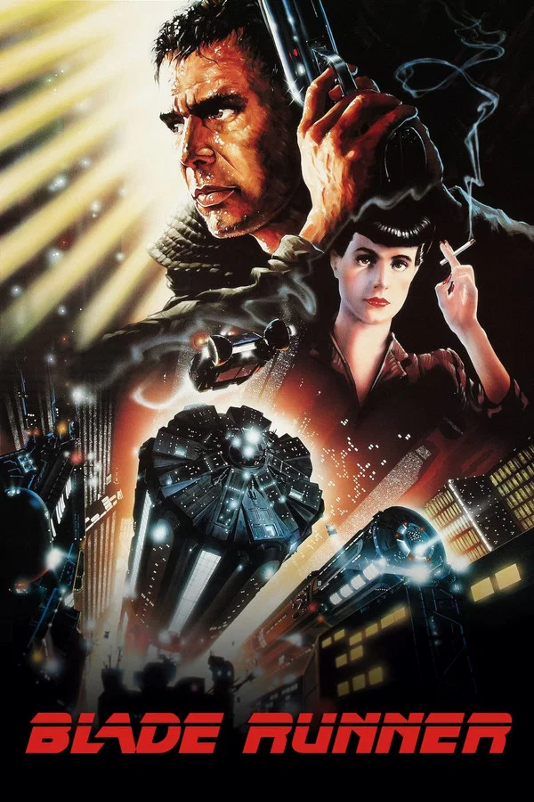
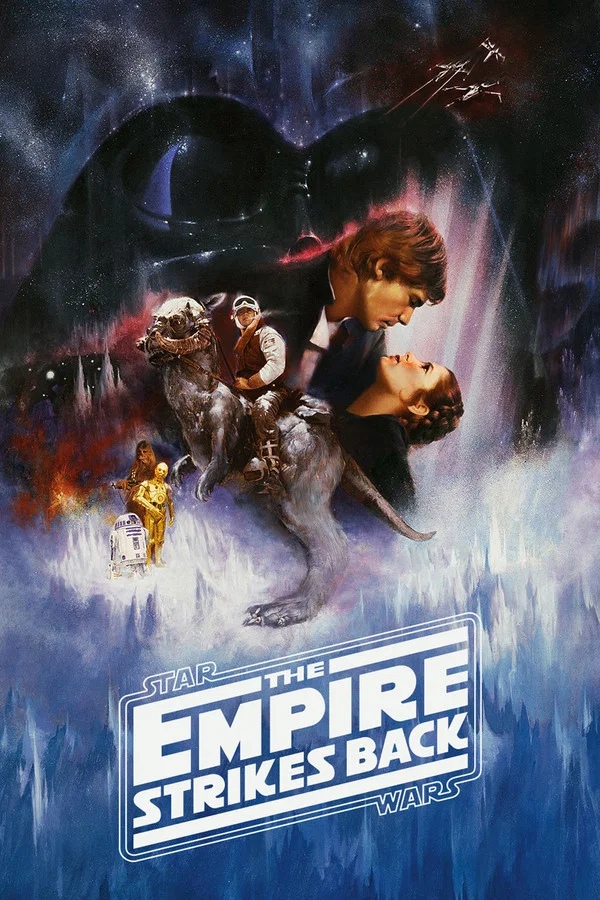
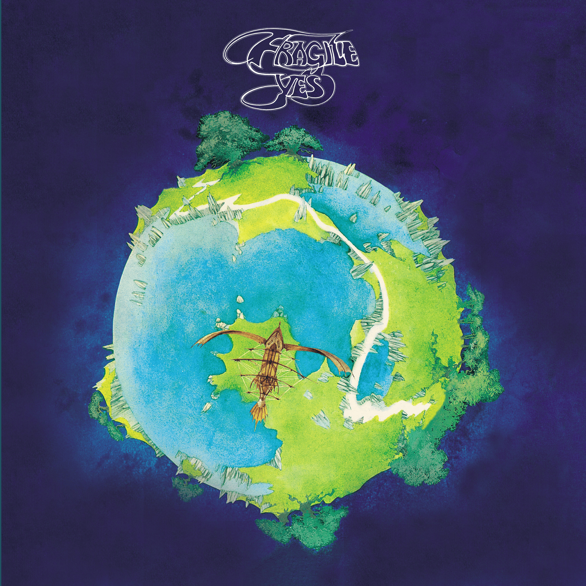
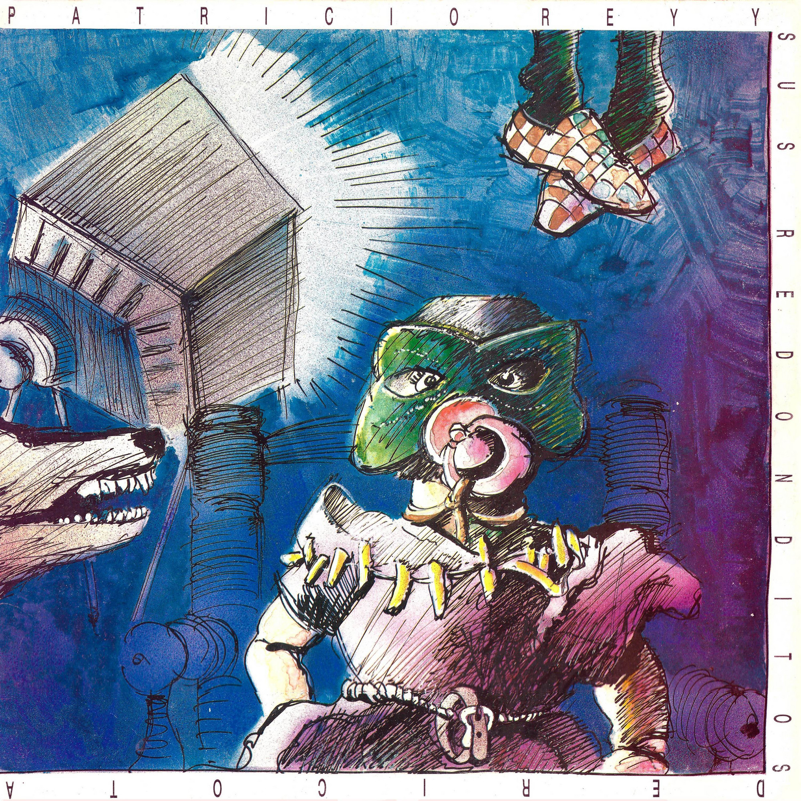
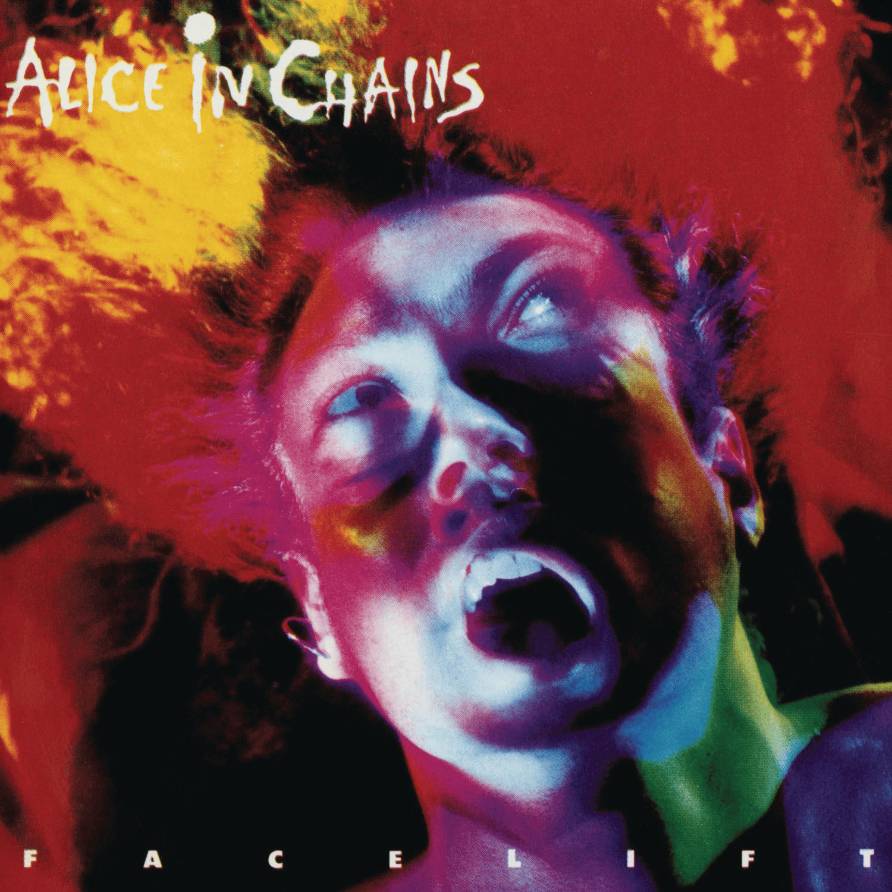
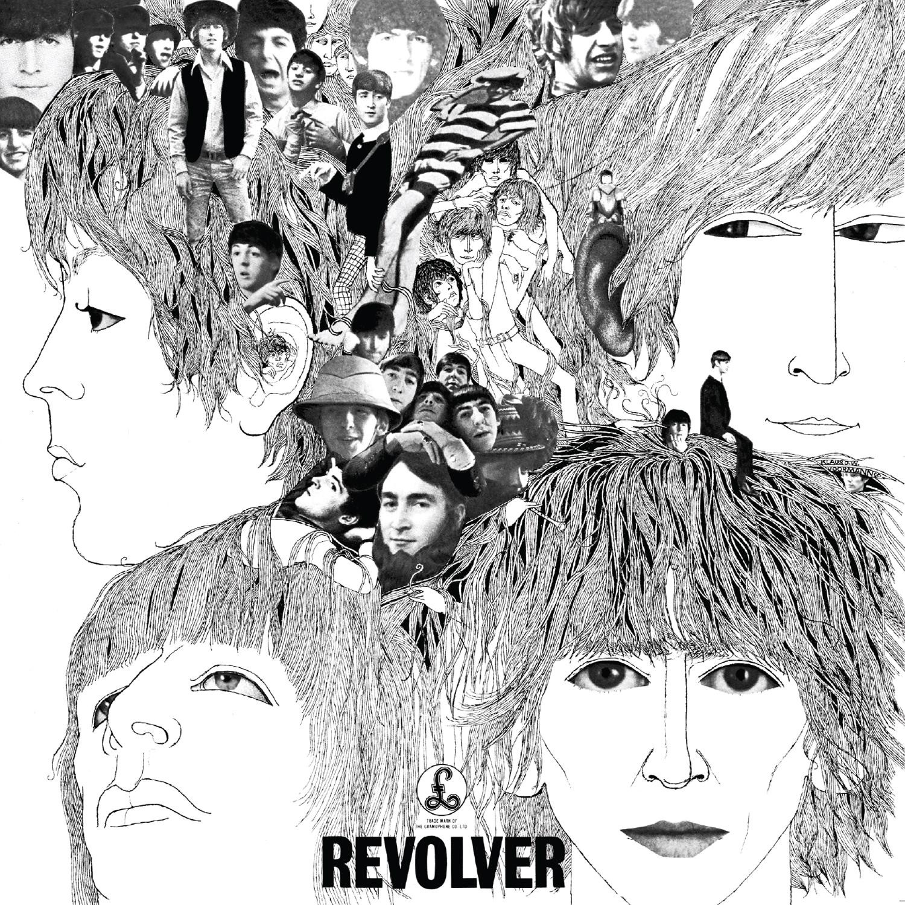
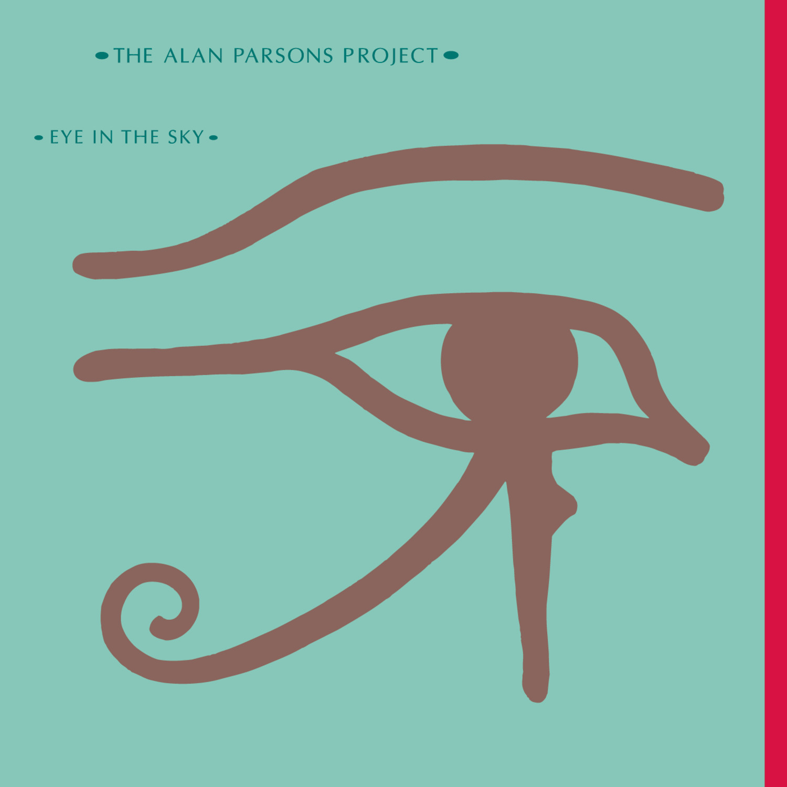

Sistema Visual & Perfil
Matías Jara
Front End Developer
Apasionado por la música y los videojuegos. Estudié composición musical, diseño de sonido y desarrollo de audio para videojuegos, lo cual me llevó al mundo de la programación. En este TP1 me encargué de mi perfil personal así como de la identidad visual en CSS.
Skills
Habilidades
- 1. Composición musical: Desarrollo de música para videojuegos y proyectos audiovisuales.
- 2. Diseño de sonido: Creación de experiencias auditivas envolventes.
- 3. Creatividad: Generación de ideas innovadoras y soluciones creativas.
- 4. Programación: Desarrollo de aplicaciones web interactivas.
Cinematografía
Películas favoritas




Colección Sonora
Discos favoritos




